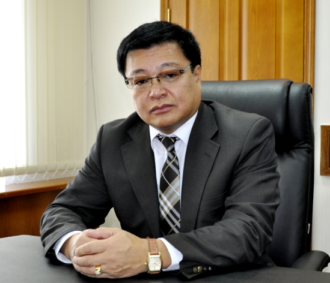

The Ministers
BATSUURI Jamiyansuren
Government Building III, Baga Toiruu-44
Sukhbaatar District, Ulaanbaatar
Mongolia
Phone: 1800-1209
Fax: +976-11-323158
http://meds.gov.mn

Minister for Road and Transport of Mongolia
GANBAT Dangaa
GANBAT Dangaa
Government Building XIII, Chinggis Avenue
Ulaanbaatar, Mongolia
Phone: (976-11) 62263170
Fax:(976-11) 312315
http://mrt.gov.mn

DASHDORJ Tsedev
Government Building II, United Nations Street 5/2
Ulaanbaatar, Mongolia
Phone: 51-263506, 51-264373
Fax: 11-318169
http://mi.gov.mn
NOMTOIBAYAR Nyamtaishir
Government Building-IX
Peace avenue-16
Ulaanbaatar-210349, Mongolia
http://mol.gov.mn